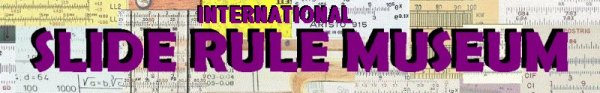

Click to join sliderule |
INTERNATIONAL SLIDE RULE MUSEUM
... an excellent source of slide rule rela related informations

Click to join sliderule
INTERNATIONAL SLIDE RULE MUSEUM
... an excellent source of slide rule rela related informations
- You may actually figure-out for yourself how to write to me. My name Robert Wolf. Put the dot in-between name and surname. The domain is the same as this page (look into the address bar), without the "sliderule" part.